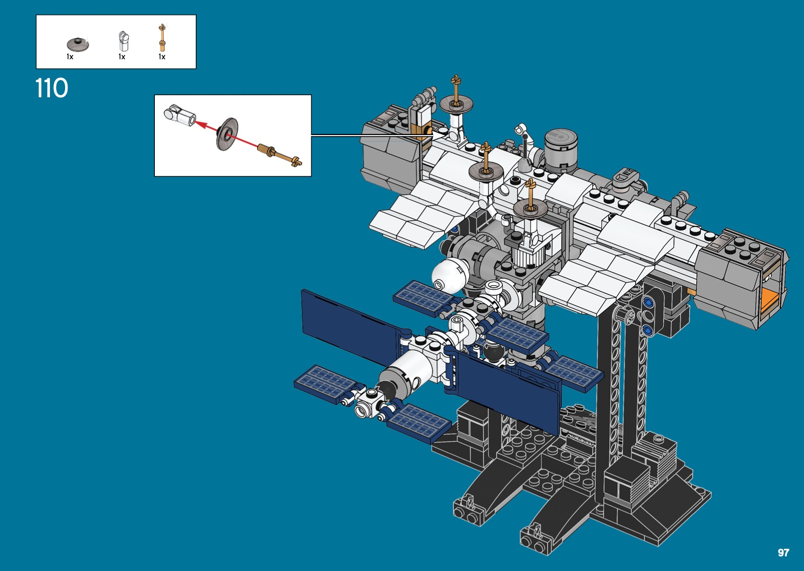

Git for better, easier and more robust research
Yi Wang
Created: 2020-07-20 Mon 15:19
1 Why Version Control?
1.1 The meme

1.2 Current situation
Research nowadays
- involves hundreds of iterations before publication,
- spans months or years, and
- has many collaborators.
1.3 Main goals to achieve
- Accountability
- who changed what at when and why
- Time travel
- easily go back to a specific version
- Clean workspace
- no more "one file, too many versions"
2 Why do we want to use Git?
- De-facto software for modern version control
- A lot of good tutorials online
- Easy to learn (maybe)
- Free, widely used collaboration service - GitHub
2.1 Benefits we get
- Accountability
- Time travel
- Clean workspace
2.2 Extra work to do
- Spend a minute or two to write a good comment on why we made this change whenever possible
3 Conceptual change
To use Git, it is important that we change the way we think of research and changes.
As an analogy, we compare research to building a Lego ISS.
3.1 Research development as building a Lego
Our situation:
- We need to build the ISS
- We only have the bricks available, not the manual
- We need to work with others to build it
- Building is intermittent
- We often
- add new parts
- remove old parts
- replace old parts
3.1.1 The old way of version control
We take a snapshot of the whole project when we feel like it, or when Dropbox and Overleaf feel like it. We eventually only get the ISS.
3.1.2 The new way of version control
We write an instruction on how and why to assemble a particular part and we eventually get a manual and the final ISS.

3.1.3 Two ways to build a Lego
The old way of version control is like taking a snapshot of everything you have built so far.
The new way is to build a manual on how to build the ISS.
3.2 Git: the manual
From the Lego example, it is important to note that
- apart from building the final Lego ISS
- we also create a manual that records the exact steps on how to build the ISS.
The manual that Git creates for our research
- records more information and
- provides all the magic that we want to achieve and many more.
4 Demonstration
In this demonstration we use Git and Sourcetree.
- Git - command line tool.
- Sourcetree - graphical tool based on Git.